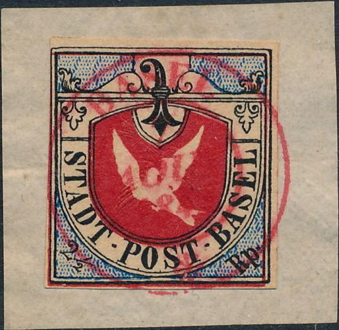
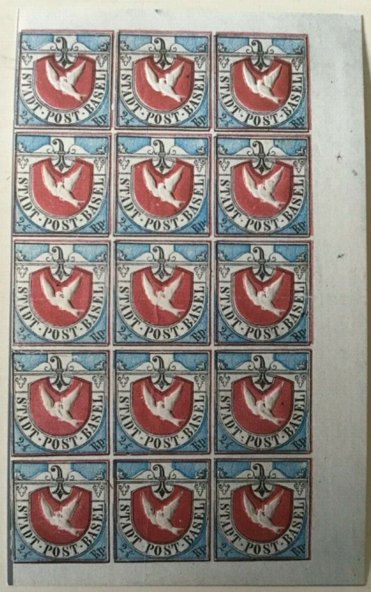

Genuine stamp
Return To Catalogue - Basle (Basel, Switzerland) - Basel forgeries Part 1
Note: on my website many of the
pictures can not be seen! They are of course present in the
catalogue;
contact me if you want to purchase the catalogue.
Genuine stamp

Peter Winter forgeries

Winter forgeries with inverted embossing.
The above forgeries are made by Peter Winter (about 1980). The cancel on the double stamp doesn't look like any I have seen before. I have also seen an uncancelled Peter Winter forgery and one with the embossed dove inverted (even on letter). Winter forgeries don't have the dot in the two lines of the shield just left of the "E" of "BASEL". Also the paper is very modern.


(Probably Peter Winter forgeries of the stamp and the essay)
(Winter forgery, cancel: "BASEL 30 OCT. 1848
NACH-MITTAG", I've seen other forgeries on pieces of a
letter with exactly the same cancel adressed to 'Herrn Paul
Bloesch & Cie Biel', also stamps with excessive margins on
small pieces of paper with the same cancel)
A Peter Winter forgery on a forged cover.
Other forgeries:

This forgery is slightly larger than the actual stamp, it furthermore has the dove printed in black lines (I don't think it is embossed, though I'm not sure).


(The "O" of "POST" seems too large in this
forgery, the "A" and "D" of "STADT"
are joined at the bottom)
The uncancelled second forgery above was recently (2004) sold on Ebay for more than 300 Euros!
(Another forgery)


A forgery with the tale of the dove very pointed. Next to it the
same forgery, with "FACSIMILE" overprint (someone has
tried to erase this word in the first forgery, but it is still
visible, notably the "S"). These forgeries were
probably made by Senf.
Forgery with the '1' of '2 1/2' slanting too much to the right.
Other forgeries:

(Forgery; The "R" of "Rp" has a wide foot)
A very primitive forgery (reduced size) in black on blue, the
dove is also printed in black.
The forger Sperati was preparing a forgery of the Basel Dove stamp, but he died before he could complete it. In a Till Neumann auction the glass matrix, a photo impression of the whole stamp, a proof on photo paper with the background etc. were auctioned:


Proof that Sperati was preparing a forgery of the Basel Dove
stamp.
The next block seems to be some kind of photographic reproduction for the 1970 commemorating of 125 years of the Basel stamp:

A similar block was issued in 1995 at the 150th anniversary of the Basel stamp for the book Basler Taube by Bach and Winterstein:

The text at the back reads "Faksimile aus dem buch
<Basler Taube> Bach/Winterstein Verlag Multipress,
Reinach"
A Menke-Huber postcard with a replica
of a Basel stamp.

Forgery on a letter send in 1852. The stamp has the blue
background pattern different from a genuine stamp (it has a
lozenge patern!). It might be a cut from the above shown
Menke-Huber card?

Some very primitive forgery in black and red.

A 'replica' for the 'GRENZBESETZUNG 1939' in the value 20 rp. The
dove is embossed. I've seen the outer text being cut off from
this label.
The non-issued stamps often have the colour green chemically altered to blue (and then sold as genuine stamps!). This was done at least by the forger Borgognini of Florence (Italy), source: Schweiz. Philatelistische Nachrichten December 1910.
The 'Swiss Philatelist' of 1984 (nos. 86/87/88) edited by H.L.Katcher, page 2 says that 'An artist named Venturini got hold of a number of the "Essays" an converted the green colour to blue by chemical means and overpainted the red shield to get the colour right'.
Literature: 'Forgeries of the "Cantonal" Stamps of Switzerland' by A de Reuterskiold (1907), I have not seen this book myself.


{kind=link}
{kind=link}
{kind=link}
{kind=link}